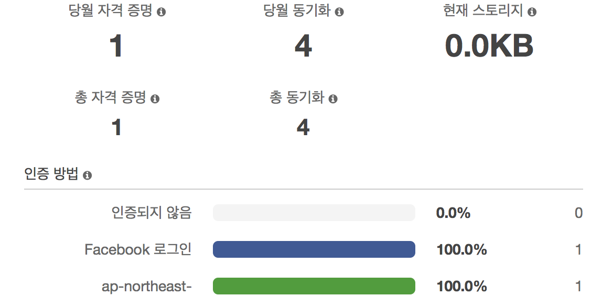

⚠ 작성 중
⚠ 개인적인 정리라 확실성을 띄는 단어를 사용하지만 실제론 그렇지 않을 수 있다.
이 글은 목적이 존재하며 Cognito 의 소개 글이 아니다. Cognito 는 AWS 문서를 참조 바란다.
현재라는 문구가 사용되면 작성 시점인 2018년 7월 17일이다.
사용자 풀 과 연동 자격 증명 풀 두 가지가 존재하며 각각 따로 생성이 가능하며 연동도 가능하다. 궁극적으로 알고자 하는 것은 아래 와 같다.
- 여러 IDP의 로그인을 통해 정보를 취합하는 앱을 만들경우 이 로그인 정보들을 어떻게 취합해서 어떻게 관리할 것인가?
- 사용자 풀 에서도 IDP 를 연동할 수 있고, 연동 자격 증명에서도 사용자 풀과 여타 IDP 연결이 가능한데, 무엇이 다른가?
특별히 궁금한 부분은 AWS 문서에도 노트로도 표시되어 있다.
참고
타사(연동)를 통한 로그인을 Amazon Cognito 사용자 풀에서 사용할 수 있습니다. 이 기능은 Amazon Cognito 자격 증명 풀(연동 자격 증명)을 통한 연동과 무관합니다.
결국 두 방식은 다르다는 뜻으로 해석되며 2 번과 관련해서는 예상 되는 결과 는 아래와 같다.
사용자 풀 베이스
회원가입 후 로그인 이후에 IDP 로그인을 지원하며 이에 따라 정보가 자연스럽게 취합이 가능.
연동 자격 증명 베이스
로그인 퍼스트 전략으로 인증된 IDP와 앱이라면 일단 로그인이 가능하며 그에 따른 인가가 이루어짐.
사용자 풀
사용자 풀은 자체 DB를 갖는 일반적인 구현 형태와 같다. 때문에 회원 가입, 회원 정보, 로그인 방식(MFA 와 같은), SMS, Email 인증등을 전반적으로 제어 할 수 있다.
연동 > 자격 증명 공급자
일단 연동 자격 증명과는 달리 입력 요구사항이 다르다.
ID(Client ID) 외에 앱 보안(Secret Key)를 요구하고 인증 범위(Scope)에 대한 지정이 가능하다. 명시적(explicit) 또는 3-way 로그인 방식에서 쓰이는 요구 사항과 같으며 이에 대한 뒷 작업을 Cognito가 해주는 것으로 예상 된다.
현재 지원되는 IDP
- Login with Amazon
- SAML
- OpenID Connect
연동 > 속성
IDP 로그인을 통해 들어온 정보와 가입시의 정보가 다른 경우 어떤 정보가 저장되는가?
연동 자격 증명(Federated Identities)
기본적으로는 사용자 풀 없이도 단지 인증된 IDP와 앱 정보를 통해 유저를 인증하고 롤(IAM)에 따라 인가할 수 있다. 간단한 어플리케이션에서 유용할 것으로 보인다.
자격 증명 풀 편집
인증되지 않은 역할, 인증된 역할에 IAM을 할당하여 권한을 지정 함
인증 공급자
인증 공급자(Identity Provider - IDP)를 등록한다. 인증 공급자는 OAuth를 지원 업체로 생각 할 수 있다.
IDP 등록을 위해서는 각 IDP 에서 생성한 App ID 가 필요하며 여기서 등록해 둔다.
예제 0페이스북을 통해 얻은 토큰 등록
1 | AWS.config.credentials = new AWS.CognitoIdentityCredentials({ |
이렇게 credentials 를 등록함으로써 로그인이 된 것으로 간주하고 인증된 역할 의 권한을 얻는다.
여러 IDP를 통해 로그인이 필요한 경우
여러 IDP를 통해서 로그인이 필요한 경우에는 각 로그인마다 다른 유저로 인식 되므로 이전 로그인 정보를 취합하여 다시 저장할 필요가 있다. 즉, Logins 의 오브젝트를 확장해야한다. 코드로 표현하면 다음과 같을 것으로 보인다.
예제 1여러 IDP 토콘을 저장하는 경우
1 | AWS.config.credentials = new AWS.CognitoIdentityCredentials({ |
예제 2순서가 정의되고 이미credentials이 이미 등록어 있어 이를 확장하는 경우
1 | AWS.config.credentials = new AWS.CognitoIdentityCredentials({ |
현재 지원되는 IDP 목록
- Cognito
- Amazon
- Google+
- Twitter / Digits
- OpenID
- SAML
- 사용자 지정
Use Case
두개의 IDP: Facebook 으로 로그인 후, Cognito 로 다시 인증하는 경우
예제 0 의 코드와 같은 방식으로 두번 각기 등록하는 경우는 유저가 2명으로 인식되나 Logins 에 두 정보를 함께 등록하는 경우 이 정보가 취합되어 한명의 유저로 인식된다.
Logins 에 한번이라도 함께 등록되면 각기 다른 IDP에 의해 발급된 두개의 토큰은 함께 연결되는 것으로 보인다. 때문에 함께 저장하는 순간 유저 수 인식이 2 에서 1명으로 변경된다.

위 이미지는 Logins 에 함께 저장 후 대쉬보드의 화면이며 Facebook 로그인(파란색)과 Cognito 로그인(녹색)이 각각 카운트가 1이나 총 자격 증명이 1 로 인식되는 걸 확인 할 수 있다. 함께 저장하기 전에는 총 자격 증명이 2 였다.